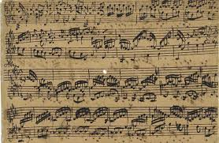

Johann Sebastian Bach
Johann Sebastian Bach fue un compositor y músico alemán del período barroco, conocido por obras como 'El Clave Bien Temperado' y 'Pasión según San Mateo'. Bach es ampliamente considerado como uno de los más grandes compositores de la historia de la música occidental.
